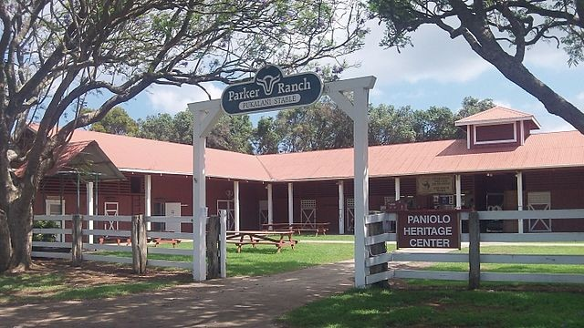
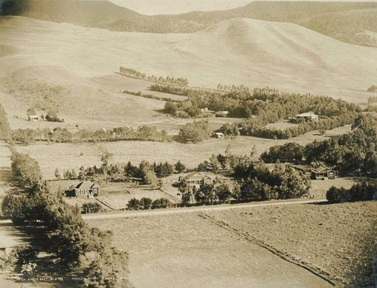

Parker Ranch

Parker Ranch is one of the most storied landscapes in Hawaiʻi — a highland expanse of rolling pasture in Waimea that helped define ranching culture across the islands. Like much of Hawaiʻi’s history, it’s a layered story: a ranch shaped by aliʻi authority, foreign arrival, and generations of paniolo whose skills and traditions became inseparable from Waimea itself.
The ranch is named for John Palmer Parker (1790–1868), an American sailor who arrived in the early 1800s and built a life as a hunter, interpreter, and rancher. The surrounding region has long been known for upland farming, travel routes, and bird catching, and the ranch’s growth sits within that older Hawaiian landscape.
The ranch’s origins trace back to an unexpected beginning: cattle. In the 1790s, Kamehameha I received cattle as gifts from Captain George Vancouver and placed a kapu on the animals so the herd could grow. Within a few decades, wild cattle multiplied across Hawaiʻi Island and became dangerous, damaging crops and threatening people.
When the kapu was lifted, hunters and ranchers were needed. Parker became one of the most effective. He married Kipikane, granddaughter of Kamanawa II, and through these aliʻi connections gained access to land and legitimacy within Hawaiian communities. Land grants associated with Kamehameha I and later Kamehameha III formed the ranch’s foundation.
Ranching culture expanded further in 1832 when Mexican vaqueros were brought to Hawaiʻi to teach horse handling and roping. Hawaiians adapted those skills quickly, and paniolo identity became central to Waimea. Over time, ranching shaped music, language, work life, and community memory across the region.
Under multiple Parker generations, the ranch grew dramatically. Samuel Parker (c.1853–1920) expanded Parker Ranch into one of the largest ranches in the United States and became a prominent political figure during the late Kingdom and early Territorial era. His influence connects to why Waimea’s post office name became “Kamuela,” using the Hawaiian form of “Samuel.”
In the 20th century, Richard Smart established the Parker Ranch Foundation Trust so the ranch would continue benefiting the community. Today, its beneficiaries include Queen’s North Hawaiʻi Community Hospital, Hawaiʻi Preparatory Academy, and Parker School.
Though smaller than its peak, Parker Ranch remains a major landholder and cultural anchor for Waimea. Its lands, often assumed to be “natural” open pasture, reflect a long history of ranching and grazing that today define the uplands. Parker Ranch endures as a meeting point of aliʻi authority, immigrant arrival, paniolo tradition, and modern Hawaiʻi life.
